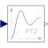

SecondOrderSecond order transfer function block (= 2 poles) |

|
Information
This information is part of the Modelica Standard Library maintained by the Modelica Association.
This blocks defines the transfer function between the input u and the output y as second order system:
k
y = --------------------------------- * u
( s / w )^2 + 2*D*( s / w ) + 1
If you would like to be able to change easily between different
transfer functions (FirstOrder, SecondOrder, ... ) by changing
parameters, use the general model class TransferFunction
instead and model a second order SISO system with parameters
b = {k}, a = {1/w^2, 2*D/w, 1}.
Example:
parameter: k = 0.3, w = 0.5, D = 0.4
results in:
0.3
y = ------------------- * u
4.0 s^2 + 1.6 s + 1
Parameters (6)
| k |
Value: 1 Type: Real Description: Gain |
|---|---|
| w |
Value: Type: Real Description: Angular frequency |
| D |
Value: Type: Real Description: Damping |
| initType |
Value: Init.NoInit Type: Init Description: Type of initialization (1: no init, 2: steady state, 3/4: initial output) |
| y_start |
Value: 0 Type: Real Description: Initial or guess value of output (= state) |
| yd_start |
Value: 0 Type: Real Description: Initial or guess value of derivative of output (= state) |
Outputs (1)
| yd |
Type: Real Description: Derivative of y |
|---|
Connectors (2)
| u |
Type: RealInput Description: Connector of Real input signal |
|
|---|---|---|
| y |
Type: RealOutput Description: Connector of Real output signal |